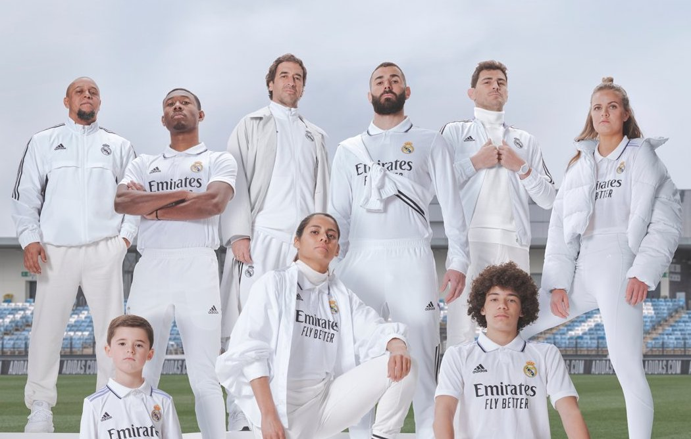

A Real Madrid alapítása után még teljesen fehér mezben játszott, de még ugyanebben az évben, 1902-ben egy kék csík is rákerült a felsőre keresztben, és a maival ellentétben sötétkék sportszárban játszottak. A kék csíkkal ellátott mez egy angol csapat, a Corinthian FC mezéről lett mintázva. Szintén 1902-ben, a sötétkék sportszárat feketére cserélték. Az 1940-es évek elején az akkori edző ismét változtatott a csapat mezén, a hátuljára számok kerültek, a mez elején, bal felső sarokban pedig felkerült a klub címere. 1947. november 23-án, egy Atlético Madrid elleni mérkőzésen a Real Madrid lett az első spanyol csapat, akinek játékosai számozott mezben léptek pályára. A Real Madrid idegenbeli meze teljesen fekete, de lehet még teljesen lila is. A mezeket 1998 óta az Adidas gyártja a csapatnak, a multinacionális céggel jelenleg is tart a szerződés. A klub első mezszponzora a Zanussi volt, a logójuk 1982-től 1985-ig szerepelt a csapat mezén. Ezután 1992-ig a Parmalat volt a csapat főszponzora. Ezt követően, 2001-ig a Teka logója szerepelt a klub mezén. A Teka logójának helyére egy szezon erejéig a klub hivatalos weboldalának címe, a realmadrid.com került, reklámozandó az oldalt. Ezután 2006-ig a Siemens volt a Real Madrid legfőbb támogatója. A Real következő mezszponzora egy szezonra a BenQ elektronikai cég volt. Ezután 5 évig fő szponzor a bwin.com, majd 2013-tól a Fly Emirates.
